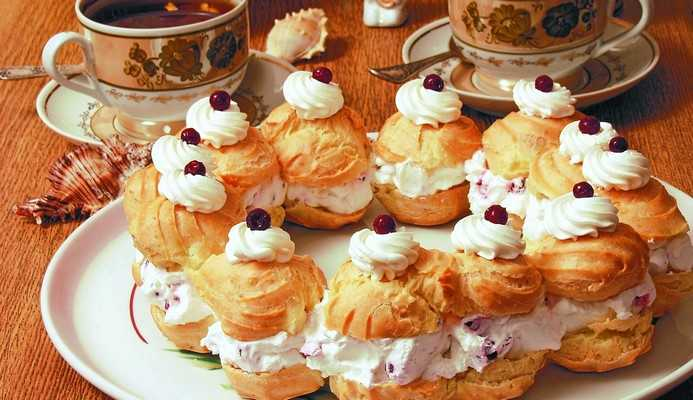

BACK
Заварные пирожные

Заварные пирожные – выпекаются в виде трубочек и колец. Кремом заполняют полость, которая образуется после выпечки изделий. поверхность заварных пирожных глазируют или обсыпают крошками.
Next